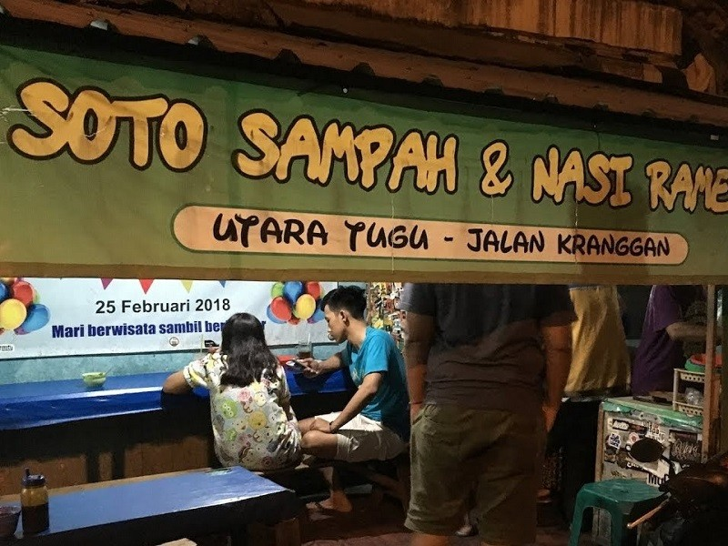
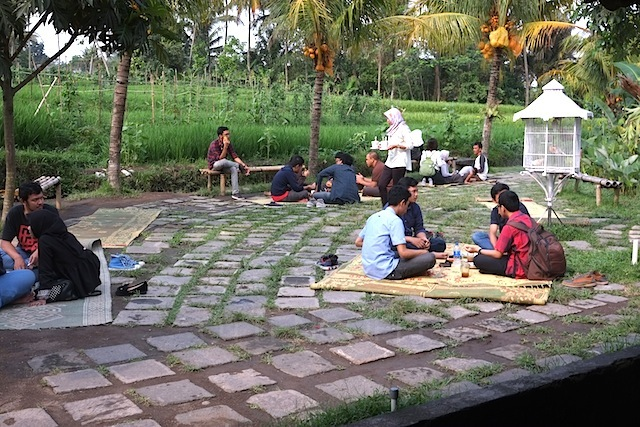

01
Yogyakarta,Tugu Jogja
Soto Sampah
Soto sampah merupakan nama pemberian dari para pengunjung yang dahulu kerap membeli soto di sini. "Dinamakan soto "sampah" oleh para pengunjung karena penyajiannya berantakan.
Read

02
lonte
Kopi Klotok
sampah merupakan nama pemberian dari para pengunjung yang dahulu kerap membeli soto di sini. "Dinamakan soto "sampah" oleh para pengunjung karena penyajiannya berantakan.
Read

03
Sleman, Yogyakarta
Kopi Merapi
Soto sampah merupakan nama pemberian dari para pengunjung yang dahulu kerap membeli soto di sini. "Dinamakan soto "sampah" oleh para pengunjung karena penyajiannya berantakan.
Read

04
Yogyakarta,Tugu Jogja
Soto Sampah
Soto sampah merupakan nama pemberian dari para pengunjung yang dahulu kerap membeli soto di sini. "Dinamakan soto "sampah" oleh para pengunjung karena penyajiannya berantakan.
Read